Generativ AI er for alvor rykket ind i klasselokalerne, og det er nu et ledelsesansvar at sætte retningen for, hvordan skolen forholder sig til det. Børne- og Undervisningsministeriet anbefaler, at AI kun anvendes, når det giver faglig, didaktisk og pædagogisk mening. Det er med andre ord ikke nok, at teknologien i sig selv er ny og spændende (Børne- og Undervisningsministeriet, 2025).
Samtidig peger international forskning på flere gevinster ved AI i undervisningen, blandt andet hurtigere feedback, mere individualiseret læring og lettere opgavegenerering. Disse gevinster indfries dog kun, hvis skolen aktivt håndterer risiciene. Her tænkes særligt på bias i modellerne, misinformation, snyd og bekymring for lærernes rolle. Balancen mellem fordele og ulemper kræver planlægning, løbende evaluering og etisk bevidsthed (Walden University, u.å.).
Skolelederforeningen har sat spørgsmålet højt på dagsordenen. På foreningens landsmøde i november 2024, hvor 2.300 skoleledere var samlet, sagde professor Ole Sejer Iversen fra Aarhus Universitet, at AI banker på skolens dør, og at skolen kun lever op til sit ansvar ved at åbne den (Folkeskolen, 2024). Han opfordrede skolelederne til selv at få personlig erfaring med AI, gøre det til en fælles sag for hele skolen, udvikle klare strategier som både lærere, elever og forældre forstår, og sikre at alle børn lærer om kunstig intelligens.
Samtidig advarede han mod at skabe en digital A- og B-klasse, hvor nogle elever får solide AI-kompetencer og andre ikke gør (Folkeskolen, 2024). Skolelederforeningens formand, Claus Hjortdal, har desuden peget på, at ministeriets anbefalinger er en stor opgave for skolerne, som kræver tid, kompetenceudvikling og økonomiske ressourcer, samtidig med at den teknologiske udvikling går så hurtigt, at skolerne har svært ved at følge med (Skolelederforeningen, 2024).
Dagsordenen er kun blevet mere presserende siden da. Da undervisningsminister Magnus Heunicke skulle sætte temaet for Sorø-mødet i august 2026, det årlige uddannelsespolitiske topmøde for ministre, forskere, skoleledere og kommuner, udskiftede han den oprindelige dagsorden om den tidlige barndom med kunstig intelligens i skolen og på uddannelserne. Det skete som led i den nye regerings arbejde med en national AI-strategi (viden.ai, 2026).
Hastigheden i udviklingen illustrerer, hvorfor det kræver vedvarende ledelsesmæssig opmærksomhed. Hvor der gik årtusinder fra ilden blev opfundet til hjulet, århundreder fra trykpressen til den industrielle revolution og årtier fra internettet til smartphonen i lommen, har udviklingen inden for kunstig intelligens på få år ændret både mulighederne og betingelserne for skolens praksis (Bæk, 2024; Conrath, 2026). Kompetenceudvikling på området er derfor ikke et projekt med en slutdato. Det er en vedvarende organisatorisk proces (Conrath, 2026).
Det er med andre ord ikke noget, den enkelte lærer kan eller skal løse alene. Det er en strategisk opgave for skolens ledelse at sætte den ramme, som resten af organisationen kan handle inden for.
- Bæk, A. (2024). AI Epoken – Sådan vil kunstig intelligens revolutionere fremtiden.
- Børne- og Undervisningsministeriet (2025). Anbefalinger om brug af generativ AI i undervisningen i folkeskolen. Styrelsen for Undervisning og Kvalitet. https://uvm.dk/aktuelt/nyheder/2025/juni/250626-offentliggoerelse-af-anbefalinger-om-brug-af-generativ-ai-i-undervisningen-i-folkeskolen/
- Conrath, M. (2026). AI i skolen: Aabenraa Kommunes rejse med generativ AI i undervisningen. Oplæg på Sorø-mødet, 6.-7. august 2026.
- Folkeskolen (2024). 2.300 skoleledere samlet: "AI banker på døren til skolen. Hvis vi vil leve op til vores ansvar, åbner vi den". https://www.folkeskolen.dk/2-300-skoleledere-samlet-ai-banker-paa-doeren-til-skolen-hvis-vi-vil-leve-op-til-vores-ansvar-aabner-vi-den/
- Skolelederforeningen / Hjortdal, C. (2024). Anbefalinger om kunstig intelligens udfordrer skolerne. https://skolelederforeningen.org/claus-hjortdal-anbefalinger-om-kunstig-intelligens-udfordrer-skolerne/
- viden.ai (2026). AI bliver hovedtema på årets Sorø-møde. https://viden.ai/ai-bliver-hovedtema-pa-arets-soro-mode/
- Walden University (u.å.). 5 pros and cons of AI in the education sector. https://www.waldenu.edu/programs/education/resource/five-pros-and-cons-of-ai-in-the-education-sector